LONDON FASHION WEEK
I offer fashion photography and portrait sessions tailored to your brand, personality, and audience. My work blends both warm and cool colour tones to create depth and atmosphere but every shoot is shaped around the look you want to achieve.
Whether you prefer clean and natural, bold and contrast led, or something more editorial, I adapt the grading style to suit your needs.
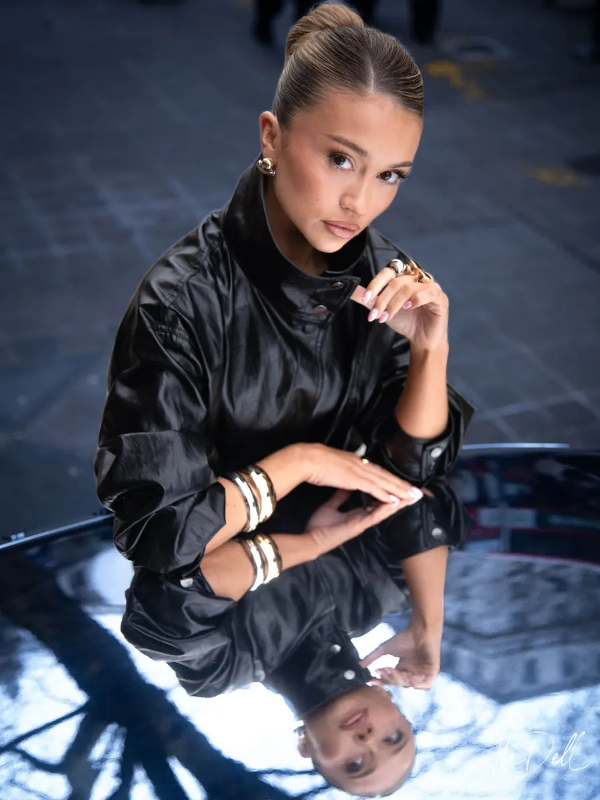
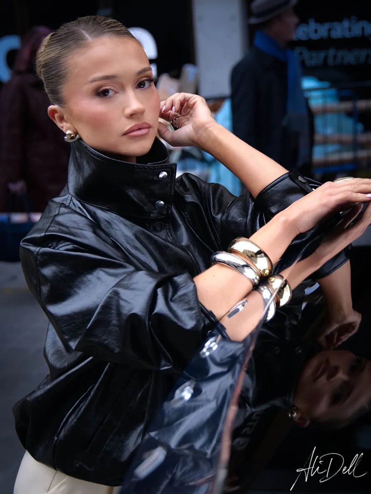
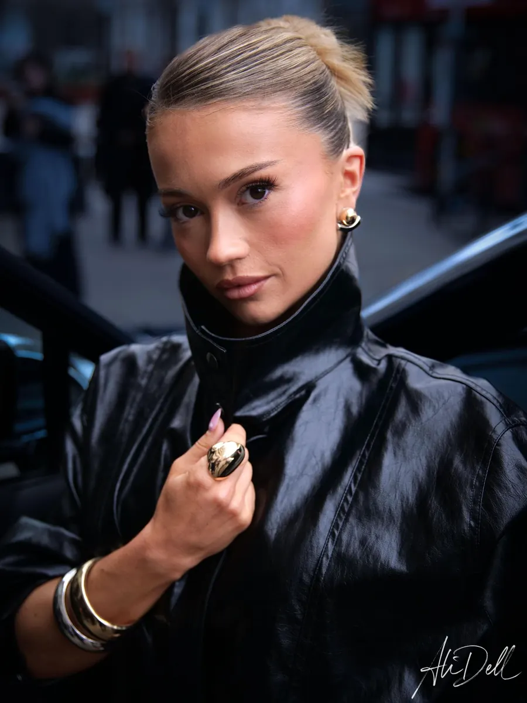
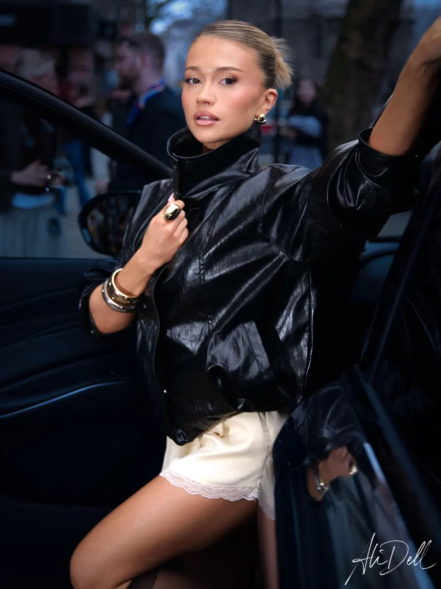
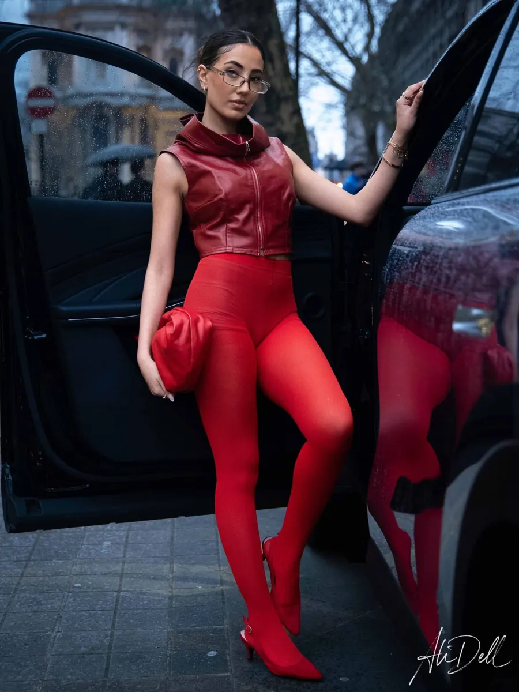
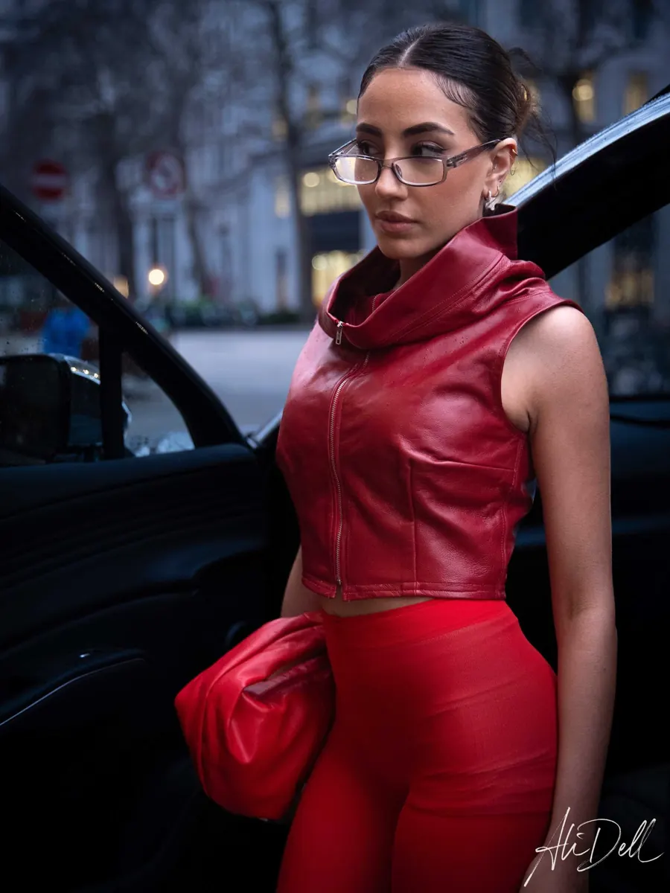
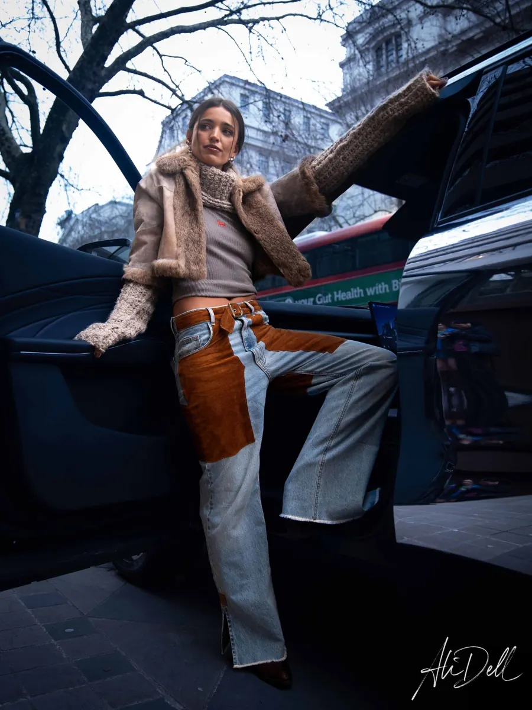
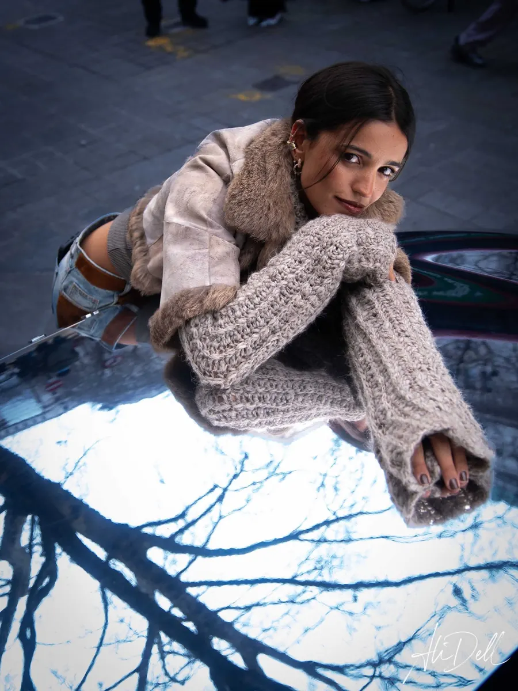
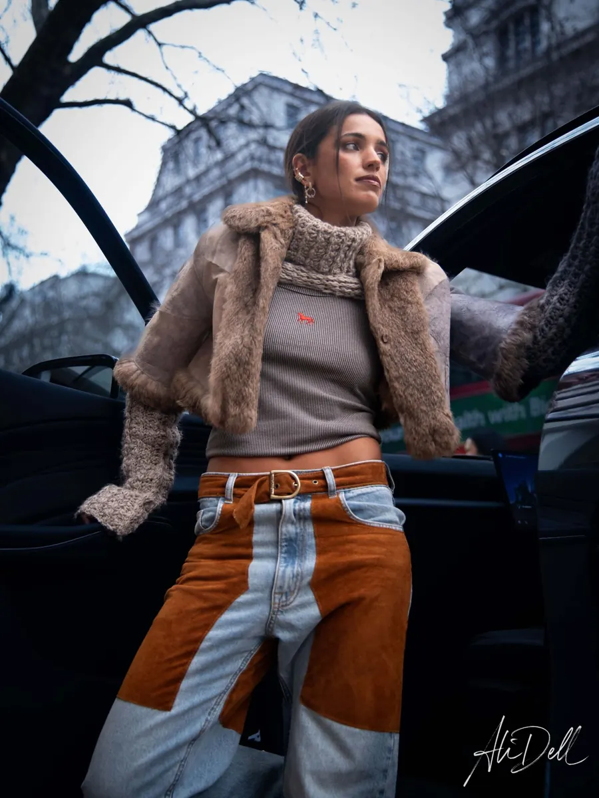
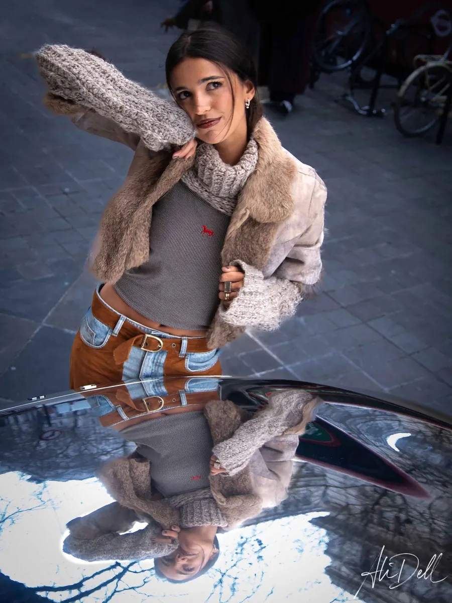
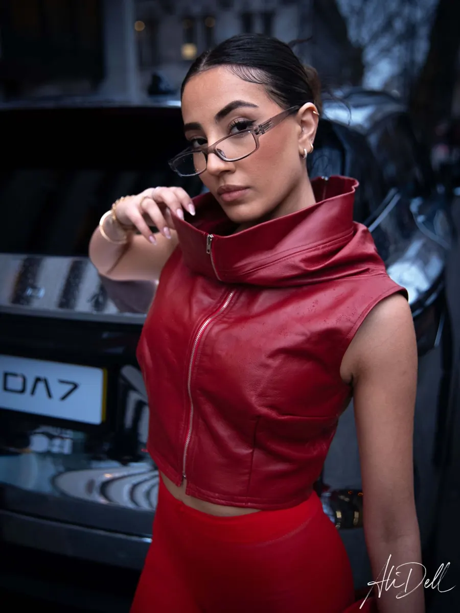
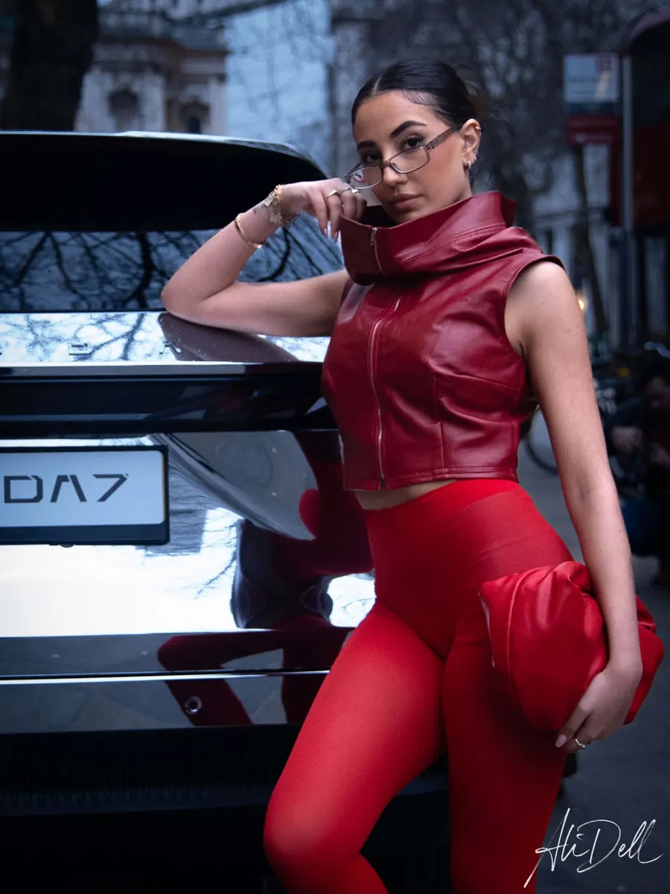